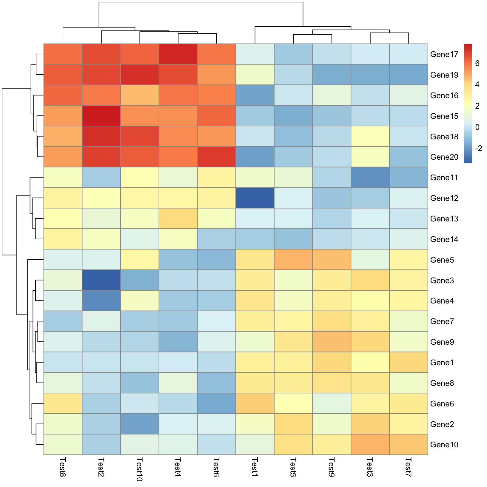

Estimated time: 15 Minutes
Motivation
Plotting the expression values across all samples for the top
variable genes in an experiment can help to visualize how samples
cluster together by their expression profiles. When combined with
phenotypic data, it can help show how samples with different treatments
behave relative to one another.
Exercise
Create a heatmap of the top 50 most variable genes using the
pheatmap() function.
Instructions
- One group member should share their screen in the breakout room. If
nobody volunteers, a helper may randomly select someone.
- The group members should discuss the exercise and work together to
find a solution.
- If there is time after a solution is found, allow all members to
complete the exercise.
Example
To get an idea of what we expect to see at the end, let’s look at a
toy example from the pheatmap() help examples. There’s no
need to run this code, we just want to illustrate the form of the
result.
# Copied from the pheatmap documentation
# Create matrix with random normally distributed values
test = matrix(rnorm(200), 20, 10)
# Impose some structure so the heatmap appears interesting
test[1:10, seq(1, 10, 2)] = test[1:10, seq(1, 10, 2)] + 3
test[11:20, seq(2, 10, 2)] = test[11:20, seq(2, 10, 2)] + 2
test[15:20, seq(2, 10, 2)] = test[15:20, seq(2, 10, 2)] + 4
# Name the rows and columns
colnames(test) = paste("Test", 1:10, sep = "")
rownames(test) = paste("Gene", 1:20, sep = "")
# Draw the heatmap
pheatmap(test)

Steps
- Look at the documentation for the
pheatmap() function
and determine what the most important parameter is. Hint: It’s usually
the first or first few parameters. This is telling us what we’ll have to
get for the next step.
Answer
?pheatmap
For this exercise, we’ll only need to use the mat
parameter, giving the numeric matrix to be plotted.
- Extract the rlog normalized expression values for the experiment.
Hint: We created an
rld object earlier. The
assay() function pulls out the values.
Answer
exp_mat = assay(rld)
head(exp_mat)
SRR7777895 SRR7777896 SRR7777897 SRR7777898 SRR7777899 SRR7777900
ENSMUSG00000000001 10.514813 10.366709 10.419463 10.840373 10.410449 10.578771
ENSMUSG00000000028 10.604461 10.734506 10.735026 10.682714 10.820938 10.990999
ENSMUSG00000000031 11.160276 10.498747 10.742763 11.861617 10.578156 10.298022
ENSMUSG00000000037 4.642433 4.555500 4.578934 4.656950 4.719012 4.620204
ENSMUSG00000000049 3.017478 2.820198 2.843894 2.936455 2.814833 2.811619
ENSMUSG00000000056 14.321672 14.284652 14.337197 13.904238 14.393912 14.235971
- Calculate the variance for each gene in the expression matrix we
just extracted. Hint: Look at the help for
matrixStats::rowVars() and decide if that’s a reasonable
function to use.
Answer
gene_vars = rowVars(exp_mat)
head(gene_vars)
[1] 0.030341701 0.017700141 0.326567308 0.003409940 0.007135949 0.030863320
- Get the numerical indices for the top 50 most variable genes. Hint:
Run the
order() function on a toy example, like
order(c(-1.25, 1.3, 5.6, 2.1)), and think about what is
being returned. Note, it’s not the values in the original vector. Then
look at the help for order() and figure out how how to
reverse what is returned.
Answer
order(c(-1.25, 1.3, 5.6, 2.1))
[1] 1 2 4 3
order(c(-1.25, 1.3, 5.6, 2.1), decreasing = TRUE)
[1] 3 4 2 1
ordered_idx = order(gene_vars, decreasing = TRUE)
top_50_idx = ordered_idx[1:50]
- Subset the expression matrix from step 2 using this index vector.
Hint: Remember square-bracket notation, and that we want to subset the
rows, while returning all the columns. Make sure the result has the
number of rows you expect, that is, 50.
Answer
top_var_exp_mat = exp_mat[top_50_idx, ]
dim(top_var_exp_mat)
[1] 50 6
- Create a heatmap using this subsetted expression matrix using the
pheatmap() function.
Answer
pheatmap(top_var_exp_mat)
Saving the result
If time permits, discuss with your group how you might save this
heatmap. Hint: Look at the parameters for the function in
?pheatmap. Alternatively, consider how we saved the PCA in
the previous module.
LS0tCnRpdGxlOiAiQnJlYWtvdXQgRXhlcmNpc2UgMSAtIEV4cHJlc3Npb24gSGVhdG1hcCIKYXV0aG9yOiAiVU0gQmlvaW5mb3JtYXRpY3MgQ29yZSIKZGF0ZTogImByIFN5cy5EYXRlKClgIgpvdXRwdXQ6CiAgICAgICAgaHRtbF9kb2N1bWVudDoKICAgICAgICAgICAgaW5jbHVkZXM6CiAgICAgICAgICAgICAgICBpbl9oZWFkZXI6IGhlYWRlci5odG1sCiAgICAgICAgICAgIHRoZW1lOiBwYXBlcgogICAgICAgICAgICB0b2M6IHRydWUKICAgICAgICAgICAgdG9jX2RlcHRoOiA0CiAgICAgICAgICAgIHRvY19mbG9hdDogdHJ1ZQogICAgICAgICAgICBudW1iZXJfc2VjdGlvbnM6IGZhbHNlCiAgICAgICAgICAgIGZpZ19jYXB0aW9uOiB0cnVlCiAgICAgICAgICAgIG1hcmtkb3duOiBHRk0KICAgICAgICAgICAgY29kZV9kb3dubG9hZDogdHJ1ZQotLS0KCjxzdHlsZSB0eXBlPSJ0ZXh0L2NzcyI+CmJvZHksIHRkIHsKICAgZm9udC1zaXplOiAxOHB4Owp9CmNvZGUucnsKICBmb250LXNpemU6IDEycHg7Cn0KcHJlIHsKICBmb250LXNpemU6IDEycHgKfQo8L3N0eWxlPgoKYGBge3IsIGluY2x1ZGUgPSBGQUxTRX0Kc291cmNlKCIuLi9iaW4vY2h1bmstb3B0aW9ucy5SIikKa25pdHJfZmlnX3BhdGgoIjA5YS0iKQpgYGAKCmBgYHtyIE1vZHVsZXMsIGV2YWw9VFJVRSwgZWNobz1GQUxTRSwgbWVzc2FnZT1GQUxTRSwgd2FybmluZz1GQUxTRX0KbGlicmFyeShERVNlcTIpCmxpYnJhcnkoZ2dwbG90MikKbGlicmFyeSh0aWR5cikKbGlicmFyeShkcGx5cikKbGlicmFyeShtYXRyaXhTdGF0cykKbGlicmFyeShnZ3JlcGVsKQpsaWJyYXJ5KHBoZWF0bWFwKQpsaWJyYXJ5KFJDb2xvckJyZXdlcikKbG9hZCgicmRhdGEvUnVubmluZ0RhdGEuUkRhdGEiKQpgYGAKCkVzdGltYXRlZCB0aW1lOiAqKjE1IE1pbnV0ZXMqKgoKIyBNb3RpdmF0aW9uCgpQbG90dGluZyB0aGUgZXhwcmVzc2lvbiB2YWx1ZXMgYWNyb3NzIGFsbCBzYW1wbGVzIGZvciB0aGUgdG9wIHZhcmlhYmxlIGdlbmVzIGluIGFuIGV4cGVyaW1lbnQgY2FuIGhlbHAgdG8gdmlzdWFsaXplIGhvdyBzYW1wbGVzIGNsdXN0ZXIgdG9nZXRoZXIgYnkgdGhlaXIgZXhwcmVzc2lvbiBwcm9maWxlcy4gV2hlbiBjb21iaW5lZCB3aXRoIHBoZW5vdHlwaWMgZGF0YSwgaXQgY2FuIGhlbHAgc2hvdyBob3cgc2FtcGxlcyB3aXRoIGRpZmZlcmVudCB0cmVhdG1lbnRzIGJlaGF2ZSByZWxhdGl2ZSB0byBvbmUgYW5vdGhlci4KCiMgRXhlcmNpc2UKCkNyZWF0ZSBhIGhlYXRtYXAgb2YgdGhlIHRvcCA1MCBtb3N0IHZhcmlhYmxlIGdlbmVzIHVzaW5nIHRoZSBgcGhlYXRtYXAoKWAgZnVuY3Rpb24uCgojIEluc3RydWN0aW9ucwoKLSBPbmUgZ3JvdXAgbWVtYmVyIHNob3VsZCBzaGFyZSB0aGVpciBzY3JlZW4gaW4gdGhlIGJyZWFrb3V0IHJvb20uIElmIG5vYm9keSB2b2x1bnRlZXJzLCBhIGhlbHBlciBtYXkgcmFuZG9tbHkgc2VsZWN0IHNvbWVvbmUuCi0gVGhlIGdyb3VwIG1lbWJlcnMgc2hvdWxkIGRpc2N1c3MgdGhlIGV4ZXJjaXNlIGFuZCB3b3JrIHRvZ2V0aGVyIHRvIGZpbmQgYSBzb2x1dGlvbi4KLSBJZiB0aGVyZSBpcyB0aW1lIGFmdGVyIGEgc29sdXRpb24gaXMgZm91bmQsIGFsbG93IGFsbCBtZW1iZXJzIHRvIGNvbXBsZXRlIHRoZSBleGVyY2lzZS4KCiMgRXhhbXBsZQoKVG8gZ2V0IGFuIGlkZWEgb2Ygd2hhdCB3ZSBleHBlY3QgdG8gc2VlIGF0IHRoZSBlbmQsIGxldCdzIGxvb2sgYXQgYSB0b3kgZXhhbXBsZSBmcm9tIHRoZSBgcGhlYXRtYXAoKWAgaGVscCBleGFtcGxlcy4gVGhlcmUncyBubyBuZWVkIHRvIHJ1biB0aGlzIGNvZGUsIHdlIGp1c3Qgd2FudCB0byBpbGx1c3RyYXRlIHRoZSBmb3JtIG9mIHRoZSByZXN1bHQuCgpgYGB7ciB0ZXN0X2hlYXRtYXB9CiMgQ29waWVkIGZyb20gdGhlIHBoZWF0bWFwIGRvY3VtZW50YXRpb24KCiMgQ3JlYXRlIG1hdHJpeCB3aXRoIHJhbmRvbSBub3JtYWxseSBkaXN0cmlidXRlZCB2YWx1ZXMKdGVzdCA9IG1hdHJpeChybm9ybSgyMDApLCAyMCwgMTApCgojIEltcG9zZSBzb21lIHN0cnVjdHVyZSBzbyB0aGUgaGVhdG1hcCBhcHBlYXJzIGludGVyZXN0aW5nCnRlc3RbMToxMCwgc2VxKDEsIDEwLCAyKV0gPSB0ZXN0WzE6MTAsIHNlcSgxLCAxMCwgMildICsgMwp0ZXN0WzExOjIwLCBzZXEoMiwgMTAsIDIpXSA9IHRlc3RbMTE6MjAsIHNlcSgyLCAxMCwgMildICsgMgp0ZXN0WzE1OjIwLCBzZXEoMiwgMTAsIDIpXSA9IHRlc3RbMTU6MjAsIHNlcSgyLCAxMCwgMildICsgNAoKIyBOYW1lIHRoZSByb3dzIGFuZCBjb2x1bW5zCmNvbG5hbWVzKHRlc3QpID0gcGFzdGUoIlRlc3QiLCAxOjEwLCBzZXAgPSAiIikKcm93bmFtZXModGVzdCkgPSBwYXN0ZSgiR2VuZSIsIDE6MjAsIHNlcCA9ICIiKQoKIyBEcmF3IHRoZSBoZWF0bWFwCnBoZWF0bWFwKHRlc3QpCmBgYAoKIyBTdGVwcwoKMS4gTG9vayBhdCB0aGUgZG9jdW1lbnRhdGlvbiBmb3IgdGhlIGBwaGVhdG1hcCgpYCBmdW5jdGlvbiBhbmQgZGV0ZXJtaW5lIHdoYXQgdGhlIG1vc3QgaW1wb3J0YW50IHBhcmFtZXRlciBpcy4gSGludDogSXQncyB1c3VhbGx5IHRoZSBmaXJzdCBvciBmaXJzdCBmZXcgcGFyYW1ldGVycy4gVGhpcyBpcyB0ZWxsaW5nIHVzIHdoYXQgd2UnbGwgaGF2ZSB0byBnZXQgZm9yIHRoZSBuZXh0IHN0ZXAuCgo8ZGV0YWlscz4KPHN1bW1hcnk+QW5zd2VyPC9zdW1tYXJ5PgpgYGB7ciBwaGVhdG1hcF9oZWxwLCBldmFsID0gRkFMU0V9Cj9waGVhdG1hcApgYGAKCkZvciB0aGlzIGV4ZXJjaXNlLCB3ZSdsbCBvbmx5IG5lZWQgdG8gdXNlIHRoZSBgbWF0YCBwYXJhbWV0ZXIsIGdpdmluZyB0aGUgbnVtZXJpYyBtYXRyaXggdG8gYmUgcGxvdHRlZC4KPC9kZXRhaWxzPgo8YnI+CgoyLiBFeHRyYWN0IHRoZSBybG9nIG5vcm1hbGl6ZWQgZXhwcmVzc2lvbiB2YWx1ZXMgZm9yIHRoZSBleHBlcmltZW50LiBIaW50OiBXZSBjcmVhdGVkIGFuIGBybGRgIG9iamVjdCBlYXJsaWVyLiBUaGUgYGFzc2F5KClgIGZ1bmN0aW9uIHB1bGxzIG91dCB0aGUgdmFsdWVzLgoKPGRldGFpbHM+CjxzdW1tYXJ5PkFuc3dlcjwvc3VtbWFyeT4KYGBge3IgZXh0cmFjdF9ybGRfZXhwcmVzc2lvbn0KZXhwX21hdCA9IGFzc2F5KHJsZCkKaGVhZChleHBfbWF0KQpgYGAKPC9kZXRhaWxzPgo8YnI+CgozLiBDYWxjdWxhdGUgdGhlIHZhcmlhbmNlIGZvciBlYWNoIGdlbmUgaW4gdGhlIGV4cHJlc3Npb24gbWF0cml4IHdlIGp1c3QgZXh0cmFjdGVkLiBIaW50OiBMb29rIGF0IHRoZSBoZWxwIGZvciBgbWF0cml4U3RhdHM6OnJvd1ZhcnMoKWAgYW5kIGRlY2lkZSBpZiB0aGF0J3MgYSByZWFzb25hYmxlIGZ1bmN0aW9uIHRvIHVzZS4KCjxkZXRhaWxzPgo8c3VtbWFyeT5BbnN3ZXI8L3N1bW1hcnk+CmBgYHtyIGNhbGNfcm93X3ZhcnN9CmdlbmVfdmFycyA9IHJvd1ZhcnMoZXhwX21hdCkKaGVhZChnZW5lX3ZhcnMpCmBgYAo8L2RldGFpbHM+Cjxicj4KCjQuIEdldCB0aGUgbnVtZXJpY2FsIGluZGljZXMgZm9yIHRoZSB0b3AgNTAgbW9zdCB2YXJpYWJsZSBnZW5lcy4gSGludDogUnVuIHRoZSBgb3JkZXIoKWAgZnVuY3Rpb24gb24gYSB0b3kgZXhhbXBsZSwgbGlrZSBgb3JkZXIoYygtMS4yNSwgMS4zLCA1LjYsIDIuMSkpYCwgYW5kIHRoaW5rIGFib3V0IHdoYXQgaXMgYmVpbmcgcmV0dXJuZWQuIE5vdGUsIGl0J3Mgbm90IHRoZSB2YWx1ZXMgaW4gdGhlIG9yaWdpbmFsIHZlY3Rvci4gVGhlbiBsb29rIGF0IHRoZSBoZWxwIGZvciBgb3JkZXIoKWAgYW5kIGZpZ3VyZSBvdXQgaG93IGhvdyB0byByZXZlcnNlIHdoYXQgaXMgcmV0dXJuZWQuCgo8ZGV0YWlscz4KPHN1bW1hcnk+QW5zd2VyPC9zdW1tYXJ5PgpgYGB7ciBvcmRlcl92YXJzfQpvcmRlcihjKC0xLjI1LCAxLjMsIDUuNiwgMi4xKSkKb3JkZXIoYygtMS4yNSwgMS4zLCA1LjYsIDIuMSksIGRlY3JlYXNpbmcgPSBUUlVFKQoKb3JkZXJlZF9pZHggPSBvcmRlcihnZW5lX3ZhcnMsIGRlY3JlYXNpbmcgPSBUUlVFKQp0b3BfNTBfaWR4ID0gb3JkZXJlZF9pZHhbMTo1MF0KYGBgCjwvZGV0YWlscz4KPGJyPgoKNS4gU3Vic2V0IHRoZSBleHByZXNzaW9uIG1hdHJpeCBmcm9tIHN0ZXAgMiB1c2luZyB0aGlzIGluZGV4IHZlY3Rvci4gSGludDogUmVtZW1iZXIgc3F1YXJlLWJyYWNrZXQgbm90YXRpb24sIGFuZCB0aGF0IHdlIHdhbnQgdG8gc3Vic2V0IHRoZSByb3dzLCB3aGlsZSByZXR1cm5pbmcgYWxsIHRoZSBjb2x1bW5zLiBNYWtlIHN1cmUgdGhlIHJlc3VsdCBoYXMgdGhlIG51bWJlciBvZiByb3dzIHlvdSBleHBlY3QsIHRoYXQgaXMsIDUwLgoKPGRldGFpbHM+CjxzdW1tYXJ5PkFuc3dlcjwvc3VtbWFyeT4KYGBge3IgZXh0cmFjdF90b3BfZXhwfQp0b3BfdmFyX2V4cF9tYXQgPSBleHBfbWF0W3RvcF81MF9pZHgsIF0KZGltKHRvcF92YXJfZXhwX21hdCkKYGBgCjwvZGV0YWlscz4KPGJyPgoKNi4gQ3JlYXRlIGEgaGVhdG1hcCB1c2luZyB0aGlzIHN1YnNldHRlZCBleHByZXNzaW9uIG1hdHJpeCB1c2luZyB0aGUgYHBoZWF0bWFwKClgIGZ1bmN0aW9uLgoKPGRldGFpbHM+CjxzdW1tYXJ5PkFuc3dlcjwvc3VtbWFyeT4KYGBge3IgY3JlYXRlX2hlYXRtYXB9CnBoZWF0bWFwKHRvcF92YXJfZXhwX21hdCkKYGBgCjwvZGV0YWlscz4KPGJyPgoKIyBTYXZpbmcgdGhlIHJlc3VsdAoKSWYgdGltZSBwZXJtaXRzLCBkaXNjdXNzIHdpdGggeW91ciBncm91cCBob3cgeW91IG1pZ2h0IHNhdmUgdGhpcyBoZWF0bWFwLiBIaW50OiBMb29rIGF0IHRoZSBwYXJhbWV0ZXJzIGZvciB0aGUgZnVuY3Rpb24gaW4gYD9waGVhdG1hcGAuIEFsdGVybmF0aXZlbHksIGNvbnNpZGVyIGhvdyB3ZSBzYXZlZCB0aGUgUENBIGluIHRoZSBwcmV2aW91cyBtb2R1bGUuCgpgYGB7ciBXcml0ZU91dC5SRGF0YSwgZXZhbD1GQUxTRSwgZWNobz1GQUxTRSwgbWVzc2FnZT1GQUxTRSwgd2FybmluZz1GQUxTRX0KI0hpZGRlbiBjb2RlIGJsb2NrIHRvIHdyaXRlIG91dCBkYXRhIGZvciBrbml0dGluZwpzYXZlLmltYWdlKGZpbGUgPSAicmRhdGEvUnVubmluZ0RhdGEuUkRhdGEiKQpgYGAK